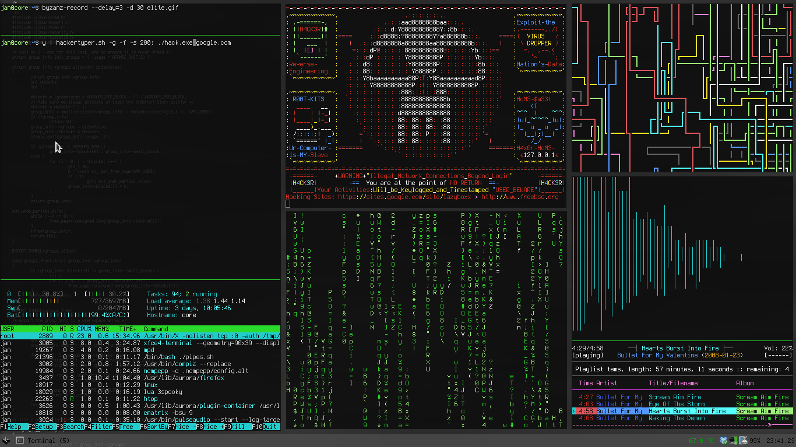
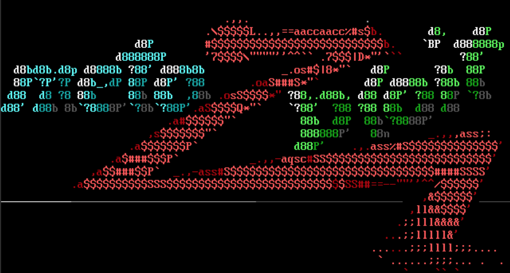

¿Qué es Metasploit?

Metasploit Framework es una plataforma avanzada de ciberseguridad utilizada para pruebas de penetración (pentesting). Permite identificar, explotar y validar vulnerabilidades en sistemas y aplicaciones.
Es ampliamente utilizada en hacking ético para simular ataques reales como ejecución remota de código, explotación de servicios vulnerables y pruebas de seguridad en redes corporativas.
Ejemplo de uso de Metasploit

Metasploit permite analizar servicios vulnerables como SMB, FTP o HTTP en sistemas desactualizados para comprobar si pueden ser explotados.
Un pentester puede usar módulos de explotación para obtener una sesión remota y evaluar el impacto real de la vulnerabilidad en un entorno controlado.
About Me

Metasploit es una herramienta fundamental en el análisis de seguridad ofensiva y auditorías profesionales.
Popular Post
Importante!!!
Uso responsable en laboratorios o entornos autorizados.